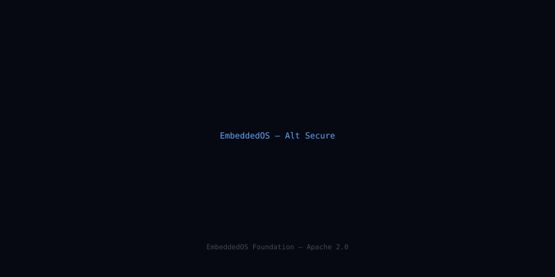
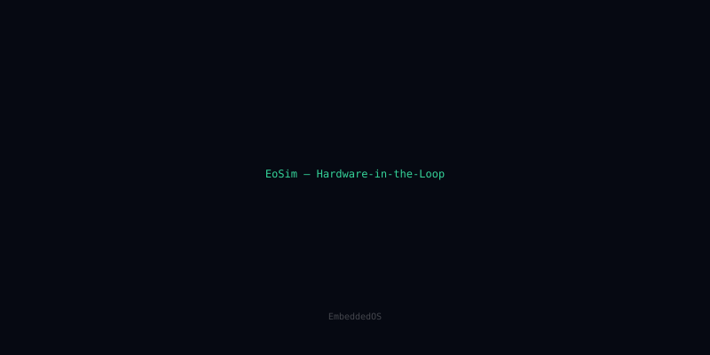
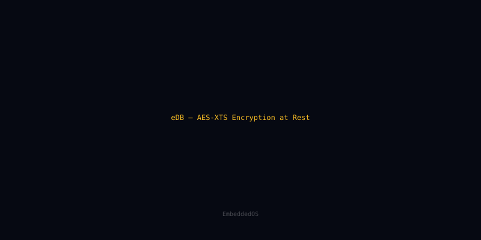
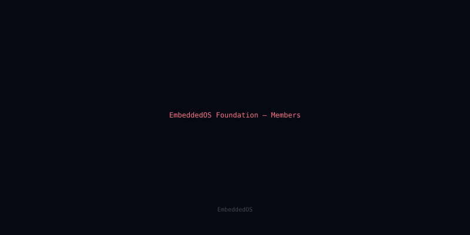
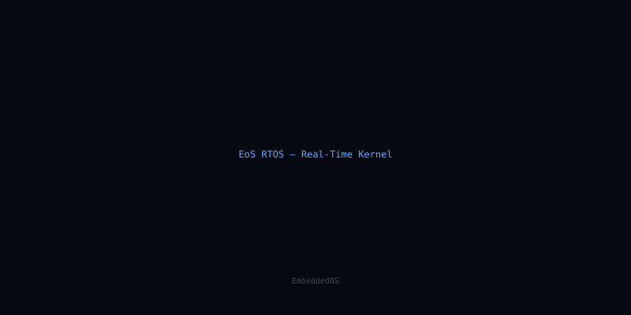

News & releases from the foundation
Reporting on every layer of the EmbeddedOS stack — RTOS internals, embedded AI, neural interface research, security and boot, tooling, and the foundation's own programs.

eos-platform 1.0 lands: one toolchain, every EoS profile
After eighteen months of incremental releases, the eos-platform meta-distribution reaches 1.0 with stable APIs, a unified package manifest, and reproducible builds across all 14 EoS components.

EAI 0.9 ships INT4 LLM runtime — 11 tok/s on a Cortex-M85
EAI's new quantized inference path squeezes a 1.3B-parameter model into 312 MB of flash and runs at interactive speed on a 480 MHz microcontroller. We dig into the kernel scheduler that made it possible.

ENI's 1,024-channel pipeline: deterministic spike sorting in 800 µs
How the Embedded Neural Interface stack moves a thousand-electrode array through filtering, sorting, and decoding inside a single RTOS frame — and why the hardest part wasn't the math.

eBootloader secure boot: a measured-launch walkthrough
An end-to-end tour of eBoot's chain of trust — root-of-trust keys, immutable stage 0, signed manifests, anti-rollback counters, and the runtime attestation hooks EAI consumes during model load.

EoSim 2.4 HIL bridge: virtual peripherals talking to real silicon
EoSim 2.4 introduces a bidirectional hardware-in-the-loop bridge: drive simulated EoS images from a real PHY, or drive real boards from a simulated MMIO bus. We walk through the new ezbus protocol.

eDB ships AES-XTS at-rest encryption — even on 64 KB devices
eDB's new storage layer adds page-level AES-XTS encryption with hardware-key offload on supported MCUs. The catch: it had to fit in 6 KB of code on the smallest target. Here's how.

Foundation 2026 membership: governance, voting, working groups
The 2026 membership cycle opens with three new working groups (Safety-Certified, Embedded AI Ethics, and Neural Interface Standards) and a refreshed governance charter. Here's what changed and how to participate.

EoS RTOS roadmap 2026: tickless idle, RT-IPC, formal verification
Three large RTOS bets for 2026: a tickless scheduler with sub-microsecond wake latency, RT-IPC primitives sharing memory across security domains, and a formally verified context-switch path.
Showing 8 of 8 · Page 1 of 1